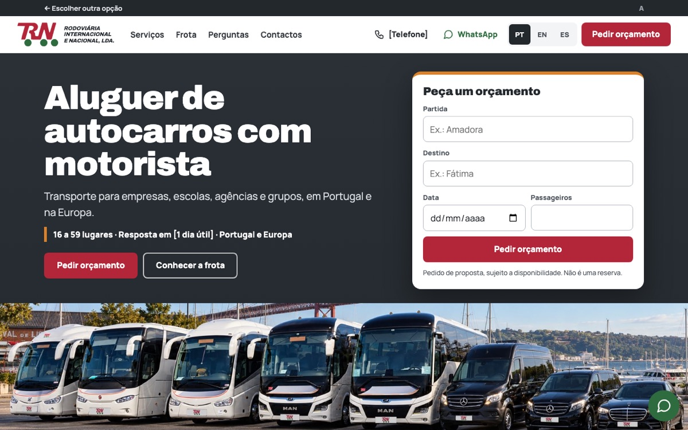
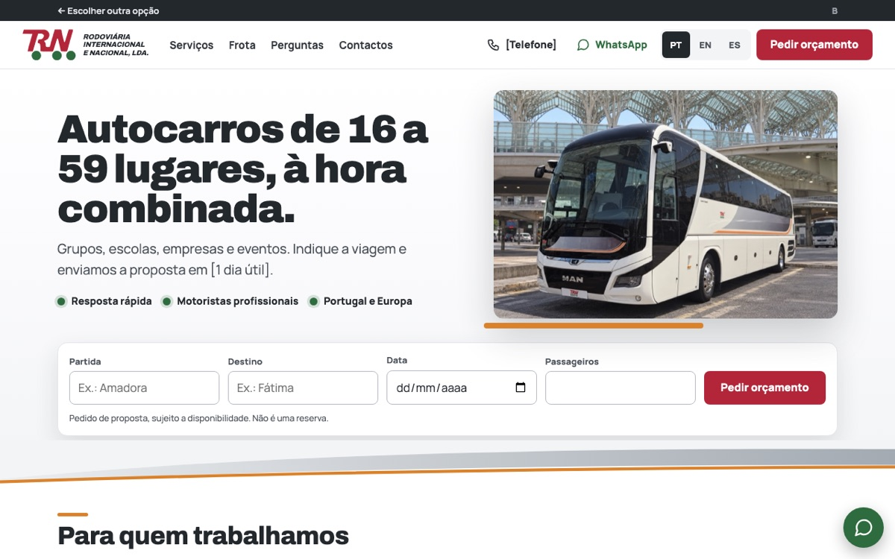

Proposta de novo website
Duas opções para o site da TRN. Escolha uma para ver o site completo, em português, inglês e espanhol.

Opção AEvolução do site atual
- Mantém a estrutura e o estilo do site atual
- Mais compacta: cerca de 3 ecrãs
- Destaque para o transporte de trabalhadores
- Onda prateada e laranja da pintura dos autocarros
Ver opção 
Opção BNova proposta, mais comercial
- Fundo claro e tom mais comercial
- Orçamento rápido logo no topo
- Separadores por tipo de cliente
- Contactos, executivo e recrutamento em três blocos
Ver opção Option AEvolution of the current site
- Keeps the structure and style of the current site
- More compact: about 3 screens
- Staff transport in the spotlight
- Silver and orange wave from the coach livery
View option Option BNew proposal, more commercial
- Light background and a more commercial tone
- Quick quote bar right at the top
- Tabs by type of client
- Contact, executive and careers in three blocks
View option Opción AEvolución del sitio actual
- Mantiene la estructura y el estilo del sitio actual
- Más compacta: unas 3 pantallas
- Protagonismo para el transporte de trabajadores
- Onda plateada y naranja de la pintura de los autocares
Ver opción Opción BNueva propuesta, más comercial
- Fondo claro y tono más comercial
- Presupuesto rápido en la parte superior
- Pestañas por tipo de cliente
- Contacto, ejecutivo y empleo en tres bloques
Ver opción